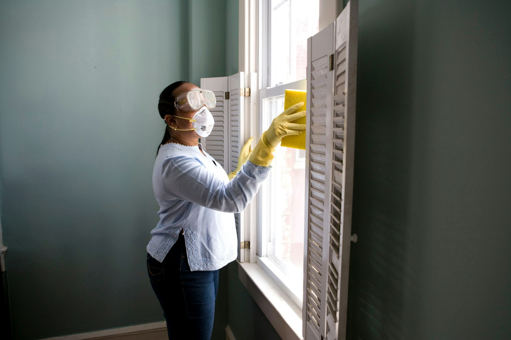

A burst pipe is one of the most common water damage events a property can face, and potentially one of the most destructive. One broken line can put out 4 to 8 gallons every minute, so 240 to 480 gallons an hour may be running through floors, ceilings and walls. Whether the cause is freezing temperatures, aging plumbing, excessive water pressure, corrosion or physical damage, a burst pipe demands immediate emergency response to limit the damage water does to structural materials, flooring, personal belongings and building systems.
Day or night, Winchester Restoration responds to burst pipe emergencies across Winchester and the nearby communities. Our restoration technicians can help you locate and shut off your water supply, and we coordinate with licensed plumbers so the plumbing repair is done properly. Once the water source is stopped, we immediately begin extraction with truck-mounted and portable equipment, removing standing water from all affected areas as quickly as possible.
After the water is out, we dry every material that took on moisture: finished floors, subflooring, wood framing, insulation and drywall. Gravity carries the water through walls, floors and ceilings, so damage from one burst commonly shows up in several rooms and on different floors. Hidden moisture leads to mold and a deteriorating structure, so we use moisture detection equipment and thermal imaging to map the water's path and make sure all affected areas get dried.

How to Tell You Need Burst Pipe Repair
Recognizing the warning signs early can save you time, money, and prevent significant damage to your property. Watch for these telltale signs that professional help is needed:
- Water pooling on floors with no apparent source
- A spray or steady drip coming off pipework you can see
- Faucets and showers across the building suddenly running weak
- No water at a tap in freezing weather, a sign the line is frozen
- Stale or earthy smells coming from a cabinet or wall cavity
- Brownish water at the faucet, which can mean corroded pipes
- Pipes coated in ice or frost when temperatures drop
Don't Wait Until It's an Emergency
Many water damage problems start small but can escalate quickly into costly emergencies. Call Winchester Restoration at (209) 721-9606 at the first sign of trouble.
Burst Pipe Repair Issues? We Can Help.
Call Winchester Restoration for fast, reliable service.
Call (209) 721-9606 NowBurst Pipe Repair: What Homeowners Ask
Why Burst Pipe Repair Is Not a DIY Job
What you can see after a pipe bursts is usually only part of the damage. It moves between ceiling joists, inside floor assemblies, beside electrical conduit and down wall cavities, soaking materials you might not find for days or even weeks. At that point mold can already be growing out of sight, and the structure may have lost a significant amount of strength. With moisture meters and thermal cameras, trained technicians follow the water's path and pinpoint every affected area right away.
Professional-grade extraction and drying equipment also works on a completely different scale than consumer tools. Compared with a shop vacuum, truck-mounted extraction is hundreds of times faster, and compared with a residential dehumidifier, a commercial one removes 10 to 20 times as much moisture. Mold can begin growing in 24 to 48 hours, so this kind of power and speed matters a great deal.
Comparing DIY and Professional Burst Pipe Repair
Some simple tasks are suitable for DIY, but most water damage work benefits from professional tools, training, and experience. Consider the following comparison:
| Factor | DIY Approach | Professional Service |
|---|---|---|
| Coordination | You hire and schedule each trade yourself | A single team runs the whole job |
| Insurance | Incomplete documentation can weaken a claim | Full records prepared for the adjuster |
| Electrical Safety | Standing water near outlets is a hazard | Crews trained to work around water safely |
| First Response | Mopping while the water keeps coming | High-volume extraction equipment on site |
| Hidden Damage | Cannot see water behind walls | Meters and thermal cameras trace every path |
Not Sure What You Need?
Call Winchester Restoration to discuss your burst pipe repair needs with a IICRC-certified technician.
Call (209) 721-9606 TodayHow Our Burst Pipe Repair Works
Our systematic approach delivers quality results on every project. Here's what you can expect when you choose Winchester Restoration:
Shut Off the Water
Phone (209) 721-9606 right away. While someone on the line helps you shut the water off, an extraction crew is sent to your property immediately.
Rapid Water Extraction
Using truck-mounted and portable extractors, we remove all standing water from floors, carpets and structural cavities. Speed is critical to minimize damage to flooring, drywall and framing.
Map the Moisture, Then Dry
With a thermal camera we follow where water moved inside ceilings, floors and walls. Drying equipment, both air movers and commercial dehumidifiers, is then placed where the map shows moisture, which keeps the work efficient.
Repair & Restoration
Damaged drywall, insulation, flooring and trim are repaired or replaced. Our team arranges the plumbing fix, documents everything for insurance and returns the home to the state it was in before the damage.
How to Prevent Burst Pipe Repair Problems
A little prevention goes a long way in avoiding expensive restoration emergencies. Here are our expert recommendations:
- Never shut the furnace off completely during a winter trip, or pipes inside may freeze
- Install water leak detection sensors near water heaters and main supply lines
- Pressure higher than 80 PSI wears on pipes and their fittings, so test yours from time to time
- Find the main shutoff valve now and practice closing it so you can do it fast
- When it freezes, let taps drip and open the cabinets under sinks to let warm air reach the pipes
- Have a licensed plumber inspect your plumbing system every few years for wear and corrosion
Talk to a Burst Pipe Repair Expert
Don't let water damage problems get worse. Call Winchester Restoration now for prompt, professional service.
Call (209) 721-9606 Today